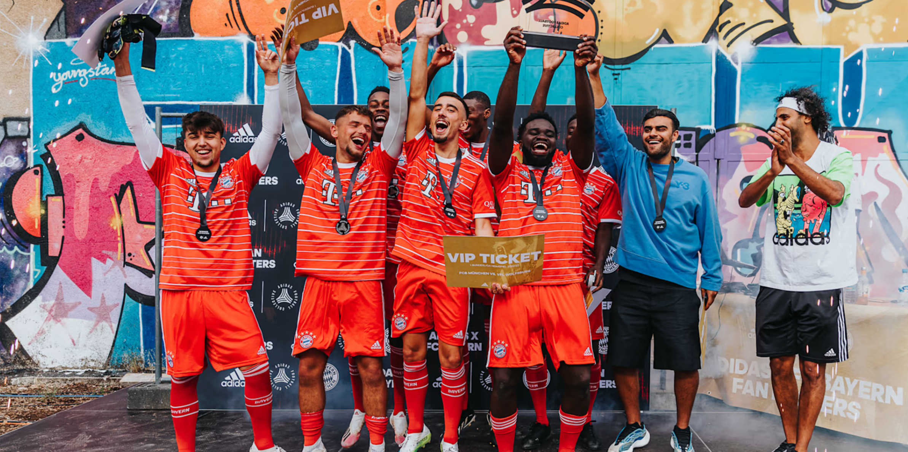

¡Bienvenido!
Esta es una fan page del club mas laureado en la historia de la Bundesliga, acá puedes encontrar noticias e información del Bayern Múnich
El Bayern cede a Malik Tillman al Rangers
Presentación del equipo

Esta es una fan page del club mas laureado en la historia de la Bundesliga, acá puedes encontrar noticias e información del Bayern Múnich